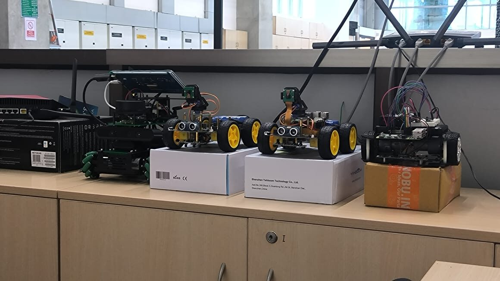
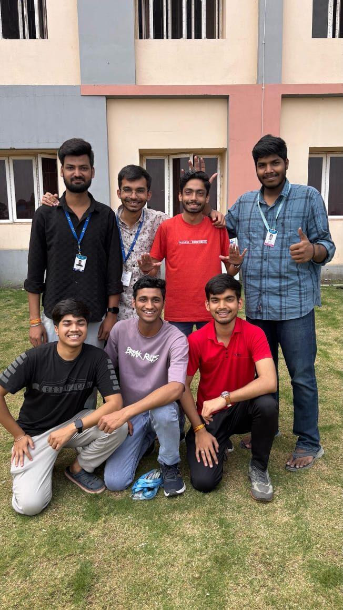
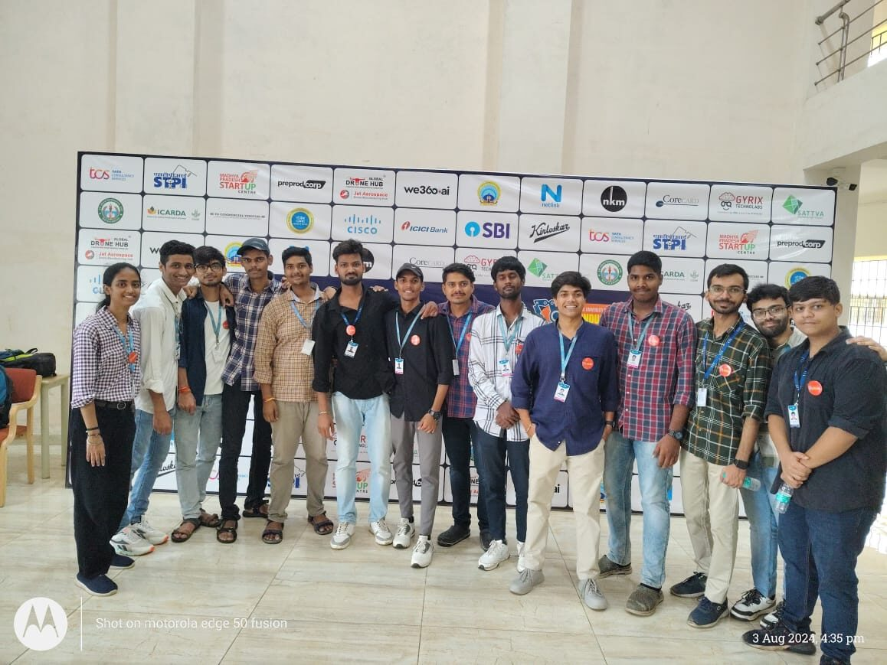
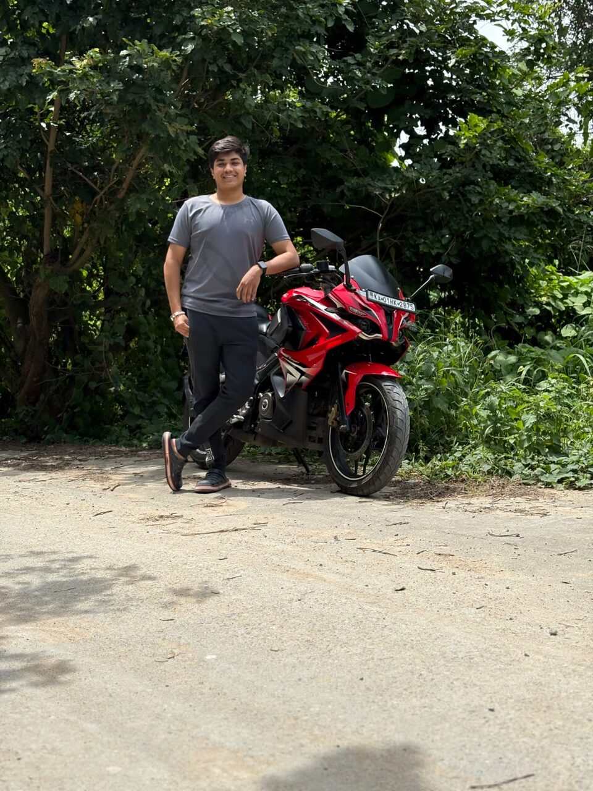
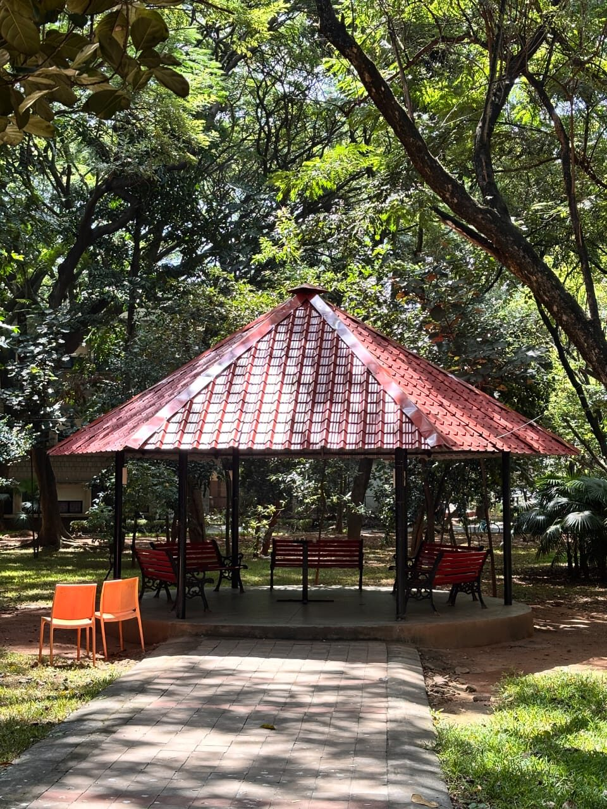
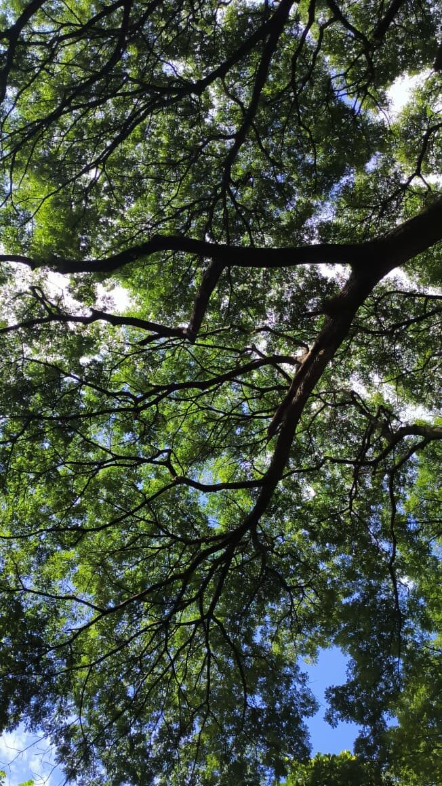
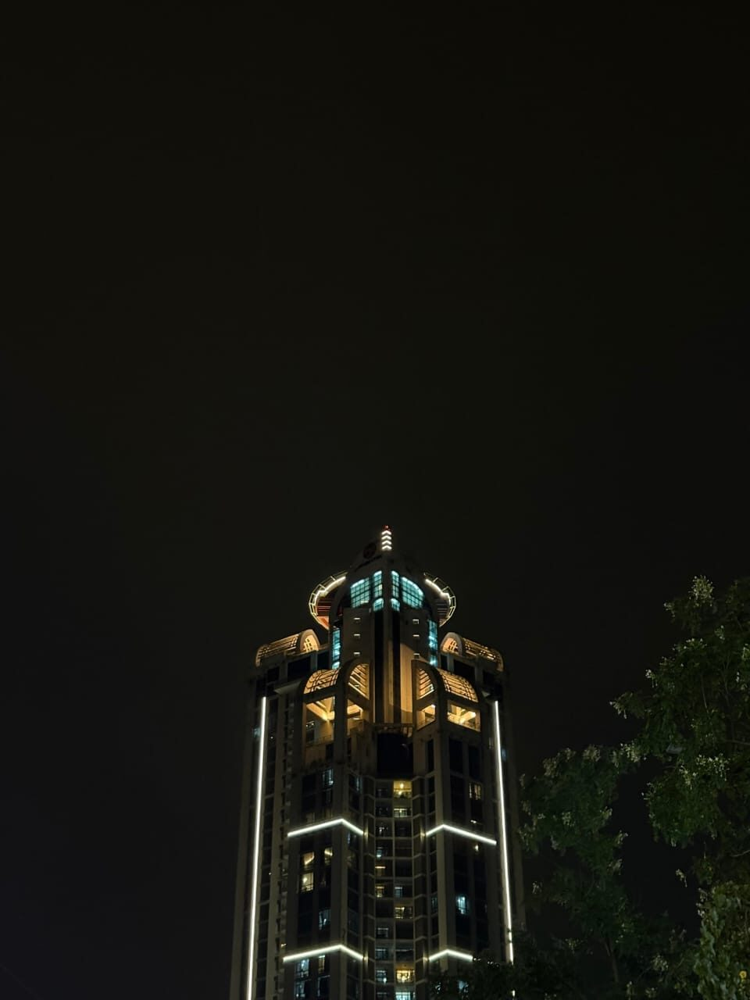
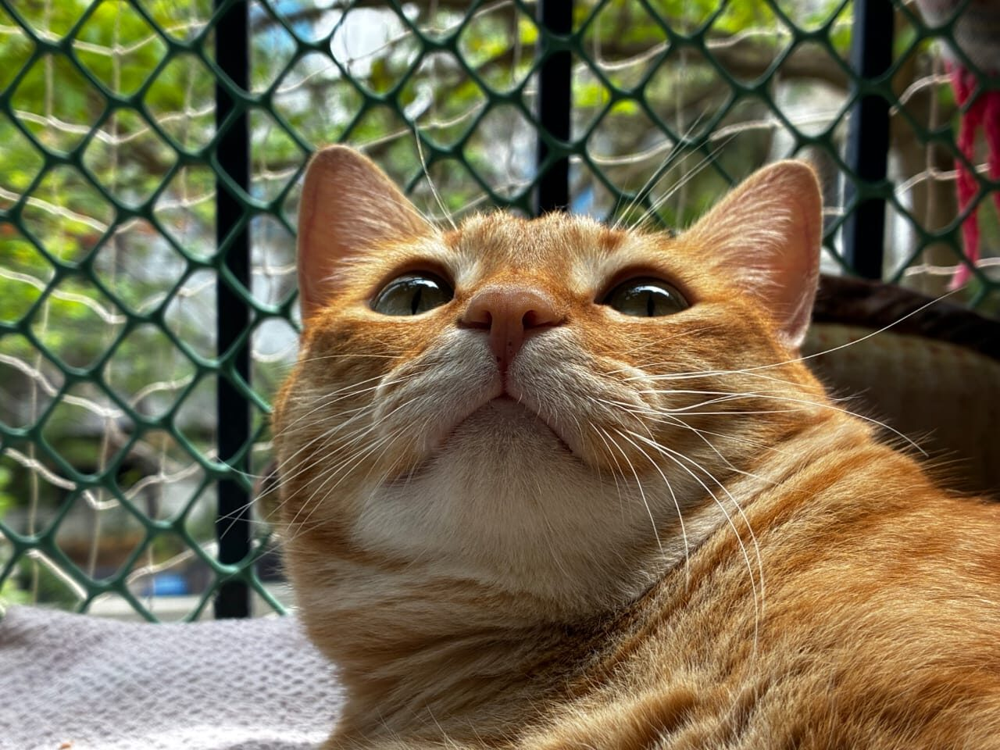
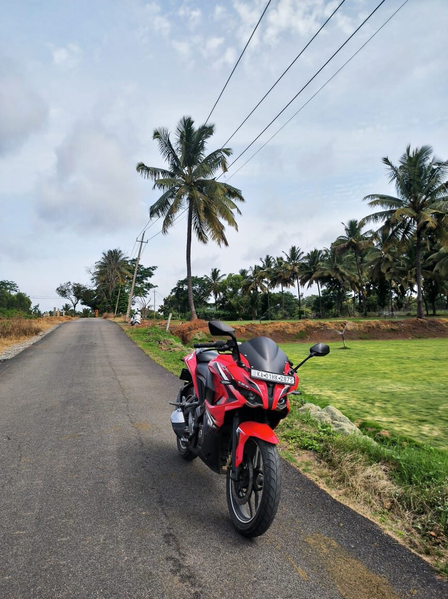

Autonomy in GPS-denied mines & tunnels
Open-source simulators rebuilt from real mine and tunnel LiDAR (MineXplore, Subterra) — so exploration policies are trained and judged against ground truth, not procedural guesses.
Robotics Researcher · Bengaluru, India
Automating the physical world.
Among the few undergraduates shipping hardware-validated, open-source autonomy benchmarks — not just papers about them.
I build real-world autonomy for GPS‑denied environments — mines, tunnels, shared workspaces — through safe & event-triggered reinforcement learning, multi-agent path finding, and perception reliability. And because robotics is bottlenecked by evaluation, I build the open benchmarks to measure it honestly. I care about robots that work outside the lab, and that know when to say "I don't know."
I've been building robots since my second year, chasing one goal — to automate the physical world and take on its hardest problems. What I enjoy is owning the whole stack: the simulator, the controller, the policy, and the hardware that has to survive contact with reality. My bias is simple — I'd rather ship a benchmark someone can break than a number nobody can reproduce. When I'm not training policies, I'm on my motorcycle somewhere outside Bengaluru, or behind a camera.
Real hardware, real geometry, measured results — three threads I care about most.
Open-source simulators rebuilt from real mine and tunnel LiDAR (MineXplore, Subterra) — so exploration policies are trained and judged against ground truth, not procedural guesses.
A quadrant-token abstraction for collision-free coordination on shared grids, validated across 100+ live motion-capture runs at IISc — cutting average inter-robot wait to about 0.1 s.
Event-triggered, Lyapunov-safe RL that acts only when needed without losing stability — and low-cost hardware (a from-scratch 6-DOF arm) to keep the theory honest.
Workshop papers & preprints at ICRA, RSS and NeurIPS 2026 / 2025 workshops. Abstracts below — I label the venue tier plainly.
ICRA 2026 Workshop (Xplore) · workshop paper · First author · Independent research
The first open-source mine simulator built from a real production mine — so exploration policies train against ground truth, not procedural guesses.
Underground mines present extreme conditions for autonomous robot navigation: GPS is denied, lighting is degraded, and tunnel topology is loop-rich and non-convex. Simulation benchmarks grounded in real production-mine geometry and compatible with GPU-accelerated learning pipelines do not yet exist in the open-source ecosystem. We present MineXplore, an open-source MuJoCo-based navigation benchmark derived from the Leung et al. 2017 Chilean underground copper mine dataset. The environment reconstructs a 104,423 m² tunnel network through a six-stage contour-to-MJCF pipeline incorporating octagonal wall cross-sections, LiDAR-sourced jagged wall geometry, three terrain friction zones, a global 5° incline, and periodic spot lighting. Geometric fidelity is validated at an Intersection-over-Union of 0.9538 against the source survey map, and surface-texture similarity scores 79.4% across six structural dimensions. A single-agent PPO baseline trained via RLlib across five random seeds achieves a best rolling coverage of 88.89% ± 1.74%, confirming stable, reproducible policy learning under realistic underground sensing and topology.

ICRA 2026 Workshop (UOWR) · workshop paper · First author · Independent research · arXiv:2606.04853
Gives a $230 LiDAR a way to know when it's being lied to — and to stop trusting itself before SLAM silently corrupts.
Low-cost 2D LiDARs lack the intensity channels that more expensive sensors use to diagnose measurement failures, yet they are the default sensor on thousands of educational and budget robotics platforms. We present SENTINEL, a training-free, label-free reliability-estimation framework that gives range-only LiDAR a diagnostic channel it does not natively possess. SENTINEL fuses geometry-based scan statistics with cross-modal depth consistency between LiDAR and an RGB-D camera to produce a per-scan score R ∈ [0,1]. When R drops below threshold, corrupted scans are suppressed and the robot falls back to calibrated wheel odometry, preventing silent SLAM corruption. We validate on GEFIER R1 — a 4-wheel skid-steer robot with an RPLidar A2M12 and Intel RealSense D435i — navigating an arena with controlled transparent and reflective failure elements. Reliability maps across five surface conditions (glass, mirror, shining paper, and mixed) show clear separation between clean and failure conditions. Since none of these failures occur in simulation, we validate entirely on real hardware.

ICRA 2026 Workshop (MARS) · workshop paper · First author · Independent research
Predicts how long a multi-robot plan will really take to execute — before any robot moves.
Multi-Agent Path Finding (MAPF) algorithms plan motion for robot teams in warehouses and shared workspaces, but standard metrics — Sum of Costs (SoC), makespan, planner runtime — can obscure how planner choices translate into realistic execution performance. We present CADENCE (Coordination- and Action-Driven Estimation for Networked Continuous Execution), a hardware study of this evaluation gap on a fixed 7×7 workcell with seven differential-drive robots, asking which features available before execution best predict final wall-clock completion time. We generate 120 plans across 15 scenarios (Empty, Medium-Random, Bottleneck) and execute each four times, yielding a 480-trial hardware corpus. Using a scenario-held-out ridge model and a trial-level mixed-effects model, we find SoC alone is informative but incomplete, while primitive motion burden gives the strongest improvement — reducing held-out error by about 48.6%–59.8% MAE and 44.2%–61.4% RMSE over SoC-only models. Much of the execution-time gap is already visible in the offline plan, before any robot moves.

RSS 2026 Workshop (WPCIS) · workshop paper · Accepted · First author · Independent research
A tunnel-navigation benchmark whose difficulty is inherited from real LiDAR, not invented by us — so reviewers can't dispute it.
Underground and subway tunnels are among the hardest settings for autonomous navigation: GNSS-denied because no satellite signal penetrates the rock, and geometrically degenerate — long, near-uniform cross-sections offer almost no landmarks, so state estimation drifts along the tunnel axis. We present Subterra, an open-source benchmark whose difficulty is inherited rather than designed: its geometry is reconstructed directly from real LiDAR in the GEODE dataset and released as a MuJoCo environment with a Gymnasium-compatible POMDP interface. The reconstructed bore is a 351 m swept tunnel; observations come from a noisy planar LiDAR and a drifting odometry model, with a Unitree B2 quadruped as locomotion embodiment. A reproducible 18-category, 199-metric suite scores the reconstruction at 97.1% global fidelity (2.46 cm synthetic-LiDAR surface error). As a usability check, an end-to-end PPO agent reaches 90.02% ± 0.01% mean rolling coverage across five seeds — hard yet learnable.

NeurIPS 2025 Workshop (WiML) · workshop paper · Co-author · arXiv:2508.12543
Turns an off-the-shelf vision-language model into a zero-shot image-forgery detective — with reasoning, no retraining.
The rapid advancement of generative models has intensified the challenge of detecting and interpreting visual forgeries, demanding frameworks that also provide reasoning and localization. Existing methods rely on supervised training for specific manipulations or anomaly detection in embedding space, but generalization across domains remains hard. We frame forgery detection as a prompt-driven visual reasoning task, leveraging the semantic-alignment capabilities of large vision-language models. We propose REVEAL (Reasoning and Evaluation of Visual Evidence through Aligned Language) with two tangential approaches: (1) holistic scene-level evaluation over the physics, semantics, perspective, and realism of the whole image, and (2) region-wise anomaly detection that splits the image into regions and analyzes each. We evaluate across domains (Photoshop, DeepFake, AIGC editing), compare vision-language models against competitive baselines, and analyze the reasoning they provide.
A sixth research thread — event-triggered, Lyapunov-safe RL (IISc Bengaluru) — is described under Projects.
Built in simulation and on real hardware.
A controller that decides not just what action to take but when to act. An event-triggered scheme with Lyapunov stability guarantees updates and communicates only when the state demands it — achieving about 74.3% higher mean inter-event time with zero safety overrides, slashing actuation and communication load without sacrificing stability.

Built a Yahboom ROSMASTER from the kit and turned it into a real-hardware testbed — object detection with YOLO models, LiDAR SLAM mapping, and autonomous navigation on the ROS 2 Nav2 stack.
Rebuilt a 6-DOF arm completely from scratch — replacing every servo — to learn the fundamentals of multi-DOF manipulators hands-on. Implemented forward kinematics for closed-loop pick-and-place and verified control signals on a digital oscilloscope, at ~75% lower cost so students can actually touch industrial automation.
A multi-agent RL digital twin for decentralized navigation of 3 LiDAR-equipped robots in a GPS-denied mine — curriculum learning, phase-aware replay, twin-critic stabilization. 91% goal-success across an 8-phase difficulty curriculum.
Targeting ~34% weed-induced crop loss: an autonomous weed-detection robot combining IoT, Mask R-CNN and LiDAR, with navigation simulated in ROS 2 Gazebo and cloud monitoring via ThingSpeak.
Designed a real-time multi-robot coordinator using a custom quadrant-token abstraction — partitioning shared grid cells into sub-cell waypoints, collision-free under quadrant mutual exclusion. Validated across 100+ live OptiTrack experiments (4 robots, scaled to 7), cutting average inter-robot wait to about 0.1 s. Also explored event-triggered, Lyapunov-safe control for efficient, stable RL. Advised by Prof. Pavankumar Tallapragada.
Building in stealth: an early-stage venture tackling the scarcity of real-world robotics data for foundation-model post-training, through curated datasets for niche, hard-to-source domains that established pipelines underserve. More soon.
Optimized T5-small inference with OpenVINO (quantization, operator fusion), reducing CPU latency from 120 ms to 84 ms (−30%). Fine-tuned on CNN/DailyMail via LoRA and layer-wise LR decay for +4.2% ROUGE-L.
B.Tech, Electronics & Communication (AI & Cybernetics)


When I'm not training policies: I ride — long routes through the lakes and palm roads around Bengaluru — and I shoot photography, mostly street, architecture and the occasional very patient cat.

Weekend rides around Karnataka — lakes, hills, and empty palm-lined roads. It's where I think through the hardest problems.




